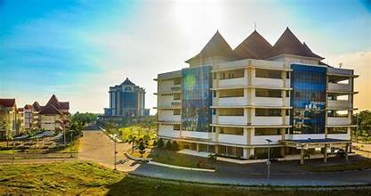
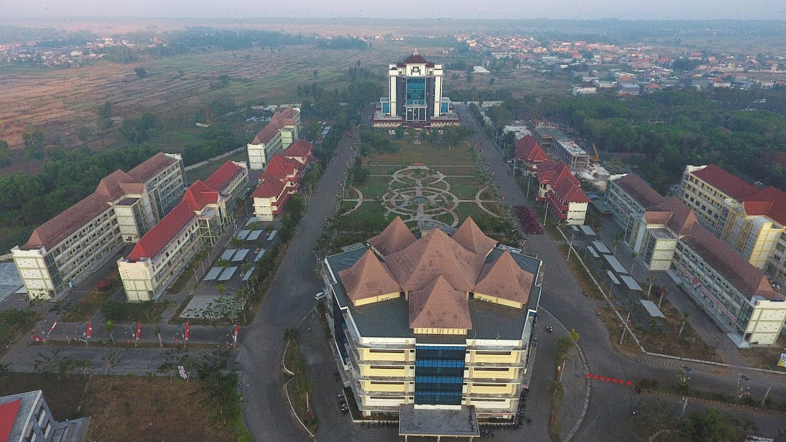

Aboat
Universitas Trunojoyo Madura (UTM) adalah perguruan tinggi negeri yang terletak di Jalan Raya Telang, Kamal, Bangkalan, Jawa Timur di Pulau Madura, Indonesia. Universitas Trunojoyo Madura dahulu merupakan universitas swasta yang resmi menjadi perguruan tinggi negeri berdasarkan Keputusan Presiden tanggal 5 Juli 2001.[1] Perguruan tinggi ini diresmikan pada tanggal 23 Juli 2001 oleh Presiden Abdurrahman Wahid. Universitas Trunojoyo Madura merupakan perguruan tinggi negeri ke-7 di Jawa Timur.
Profil

gedung rektorium

gedung CAKRA

Denah kampus utm